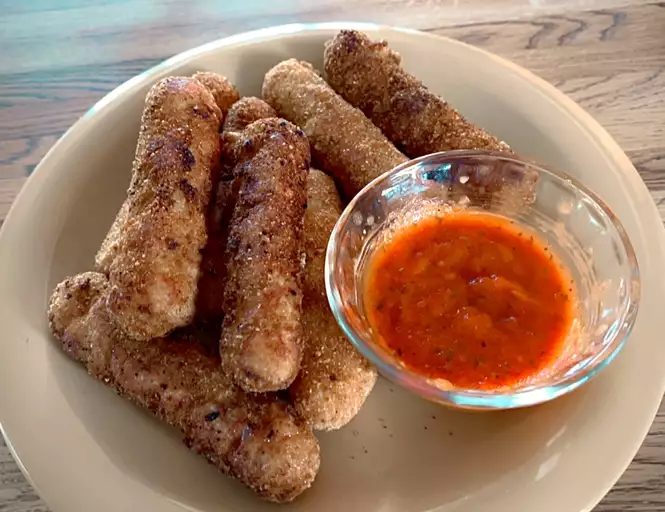

Fried Mozzarella Cheese Sticks

Mozzarella Cheese Sticks
Mozzarella sticks are very easy to make at home. They're deep-fried untill golden and crispy on the outside, with melty gooey cheese on the inside.
They're so good and take just minutes to fry! Try dipping them in marinara sauce!
Ingredients
- 2 Large Eggs beaten
- 1/4 cup of water
- 1 and half cups Italian Seasoned bread crumbs
- 1/2 teaspoon garlic salt
- 2/3 cup all purpose flour
- 1/3 cup cornstarch
- 2 cups oil for frying, or as needed
- 1 (16 ounce) package mozzarella cheese sticks
Steps
- Whisk water and eggs together in a small bowl. Mix bread crumbs and garlic salt together in a medium bowl. Blend flour and cornstarch together in a third bowl
- Heat oil to 365 degrees F in large heavy saucepan
- Drege a mozzarella stick in flour; shake off excess. Dip into egg mixture. Lift up so excess egg drips back into the bowl. Press into bread ctumbs to coat. Place breaded mozzarella stick on a plate or wire rack. Repeat with remaing mozzarella sticks
- Use a spider spoon or a pair of tong to lower 3 to 4 mozzarella sticks into the hot oil. Fry until golden brown, about 30 seconds. Remove from heat and drain on paper towels. Repeat to fry remaining mozzarela sticks